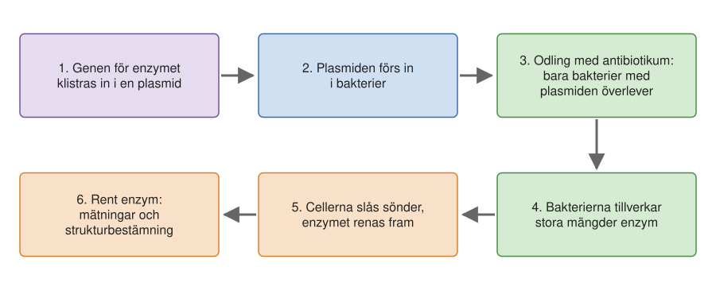
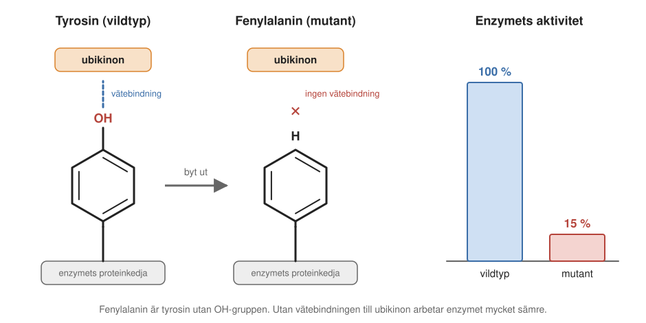
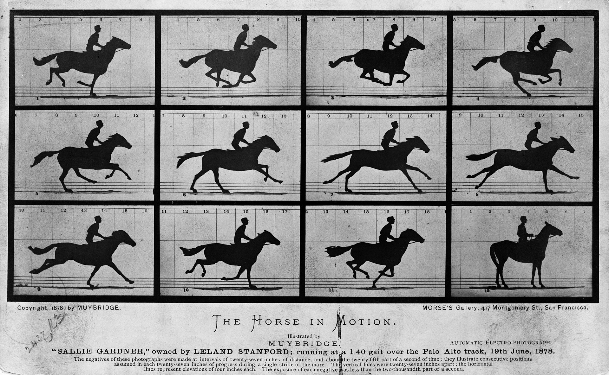
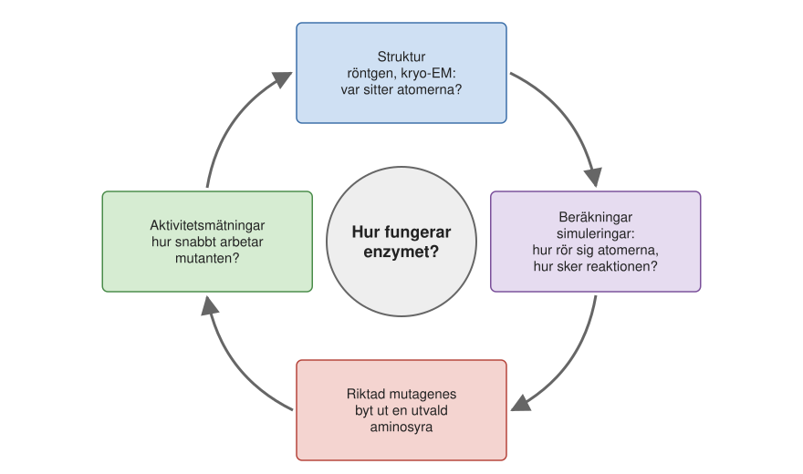
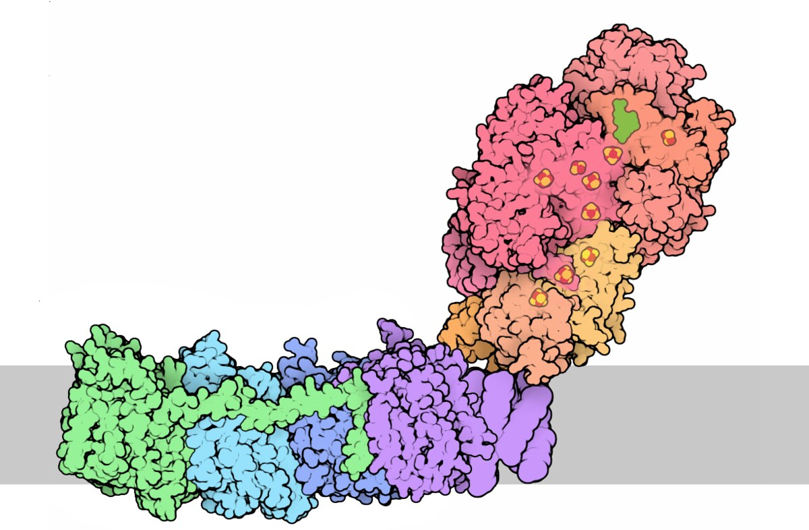
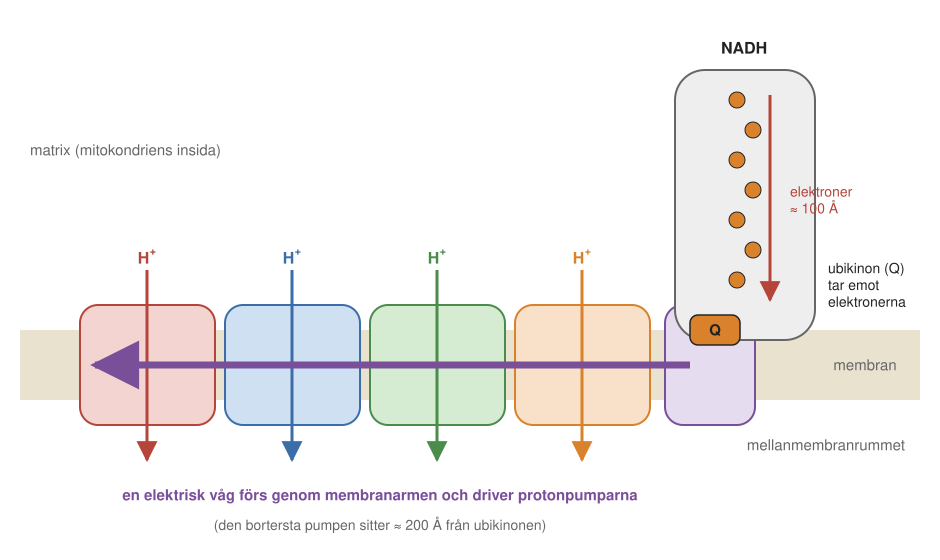
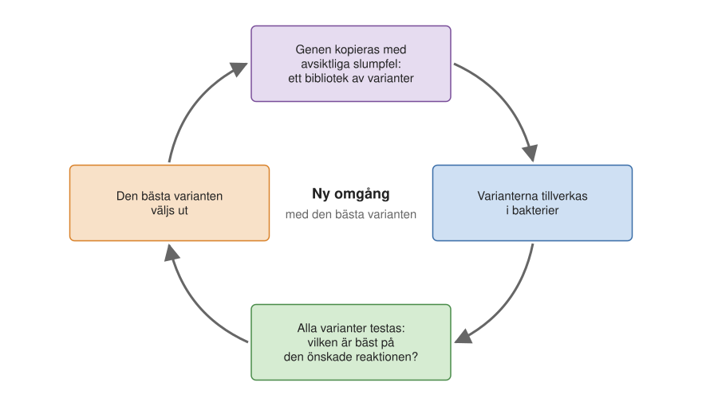
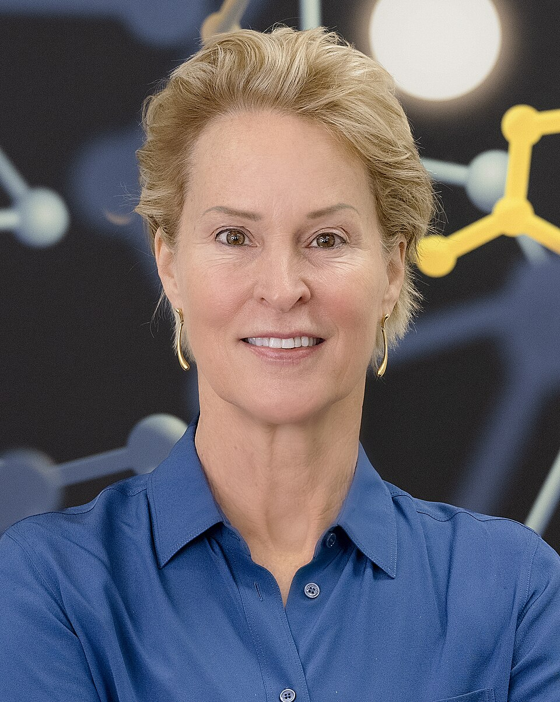
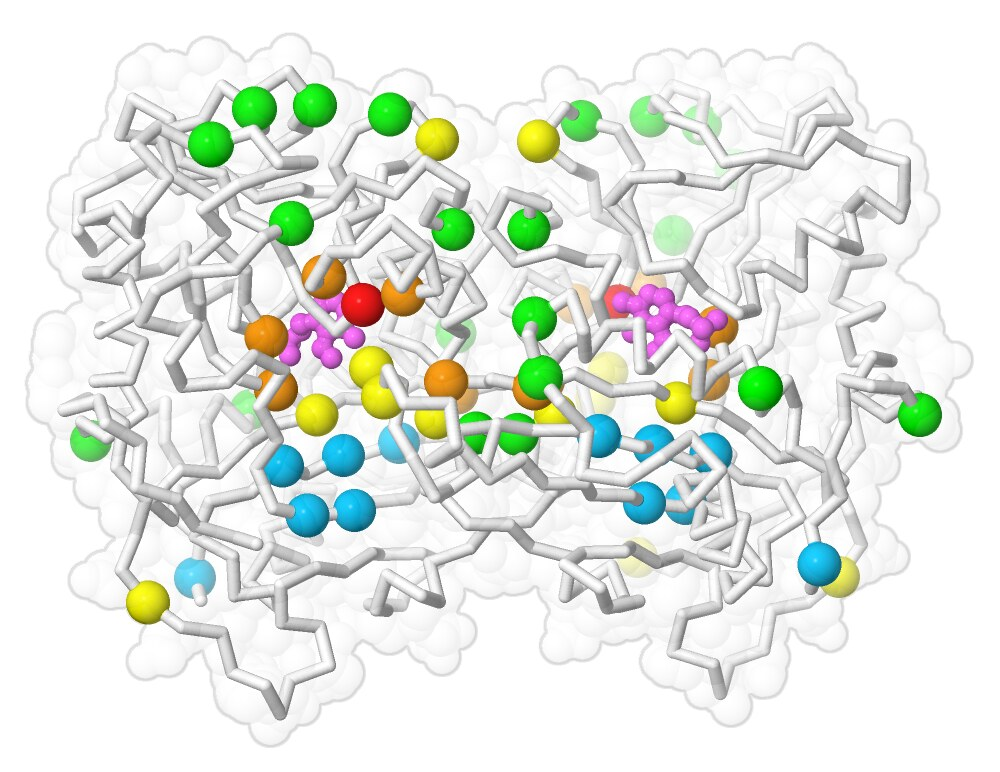

5 Syntetisk biokemi – drömmen om att bygga nya proteiner
Tänk dig att du kommer från en annan planet och för första gången ser en bil. Du kan mäta vad som går in och vad som kommer ut: bensin och luft in, koldioxid och vatten ut. Du kan ta ett fotografi av bilen. Men du vet ändå inte hur den fungerar. För det måste du titta in under motorhuven, helst medan motorn går, och se hur kolvarna rör sig och hur kraften förs vidare till hjulen. Och även då är det inte säkert att du kan bygga en egen bil. Kanske måste du först plocka isär den, byta ut delar och se vad som händer.
Det är ungefär den situation biokemister befinner sig i när de studerar enzymer. I Kapitel 4 såg vi vad enzymer är och de grundläggande principerna för hur de fungerar: de binder sitt substrat i ett aktivt centrum och sänker energibarriären genom att stabilisera övergångstillståndet. Men hur gör ett visst enzym, atom för atom? Enzymer är mycket små, och reaktionerna går på tusendels eller miljondels sekunder. I det här kapitlet ser vi hur forskare ändå tar reda på det, med en kombination av många metoder. Sedan tittar vi på ett av naturens mest komplicerade enzymer, och till sist på drömmen om att bygga helt nya enzymer.
5.1 Verktygslådan
För att förstå hur ett enzym fungerar räcker det sällan med en enda metod. Forskarna kombinerar flera:
- Tillverka och rena enzymet, så att det kan studeras utan störningar från resten av cellen.
- Mäta aktiviteten, ofta genom att följa en färgförändring.
- Ändra byggstenarna med riktad mutagenes och se hur aktiviteten påverkas.
- Bestämma strukturen, alltså var varje atom sitter, med röntgenkristallografi eller kryoelektronmikroskopi.
- Spektroskopi av olika slag. Man kan till exempel placera proteinet i ett starkt magnetfält, som i en magnetkamera på sjukhuset, och få information om hur delar av det rör sig. Det kallas NMR-spektroskopi (efter engelskans nuclear magnetic resonance, kärnmagnetisk resonans). Andra metoder mäter hur bindningarna i proteinet vibrerar.
- Datorsimuleringar, där man räknar ut hur atomerna rör sig och hur reaktionen går till, med fysikens lagar.
Vi går igenom de viktigaste i tur och ordning, och börjar med det första steget: att över huvud taget få fram enzymet.
5.2 Att tillverka ett enzym
En cell är tätt packad med proteiner och andra molekyler (se bilden av en bakterie i Kapitel 2). Om man vill veta vad just ett enzym gör är det svårt att studera det mitt i trängseln. Biokemister föredrar därför ofta att plocka ut enzymet och studera det rent, i ett provrör. Man talar om experiment in vivo, i levande celler, och in vitro, “i glas”, alltså i provröret. Provröret är en förenkling, och enzymet kanske inte beter sig exakt som i cellen. Men experimentet blir kontrollerat: man vet precis vad som finns i röret.
Först måste man ha tillräckligt med enzym. Ofta gör man om sina bakterier till fabriker (Figur 5.1). Man utgår från enzymets aminosyrasekvens och översätter den baklänges till en DNA-sekvens, enligt den genetiska koden (Kapitel 1). DNA:t tillverkas syntetiskt och klistras in i en plasmid, en liten ring av DNA som bakterier naturligt använder för att dela gener med varandra. Teknikerna för att klippa och klistra DNA beskrivs närmare i Kapitel 3.
Plasmiden förs sedan in i bakterier, men alla bakterier tar inte upp den. Hur får man bort dem som saknar den? Här utnyttjar forskarna att det är med plasmider som bakterier sprider resistens mot antibiotika. Plasmiden får också en gen för antibiotikaresistens. När man sedan odlar bakterierna i närvaro av antibiotikum överlever bara de bakterier som har tagit upp plasmiden, och alla dessa tillverkar vårt enzym.

Bakterierna odlas i stora kärl, ibland i tiotals liter odlingsvätska. Sedan samlas cellerna, slås sönder, och enzymet renas fram i flera steg. Man använder bland annat centrifuger och kromatografi, där proteinerna får passera genom kolonner fyllda med material som sorterar dem efter storlek eller efter hur de binder. Ofta har man i förväg försett enzymet med en liten “etikett” av några aminosyror som fastnar i en viss kolonn, så att enzymet lätt kan fiskas ut. Till slut har man ett mycket rent enzym.
Det låter enkelt, men det är ofta veckors arbete, och det kan ta år innan man får bakterierna att tillverka ett besvärligt protein i fungerande form. Vissa proteiner kan inte tillverkas i bakterier alls, utan kräver mer komplicerade celler, som jäst- eller insektsceller.
5.3 Att mäta hur enzymet arbetar
När man har rent enzym och rent substrat kan man mäta de tal som beskrevs i Kapitel 4: hur snabbt enzymet arbetar när det är mättat (kcat) och hur mycket substrat som behövs för halva maxhastigheten (KM). Då behöver man ett sätt att se hur snabbt substratet försvinner eller hur snabbt produkterna bildas.
Det vanligaste sättet är att följa en färgförändring. Ibland har substratet eller produkten själv en färg. Ibland tillsätter man ett färgämne, till exempel en pH-indikator som i försöket med kolsyraanhydras i Kapitel 4, där lösningen slog om till gult eller orange när vätejonerna bildades.
Färgen mäts med en spektrofotometer. Det är i princip en lampa, ett prisma eller ett gitter som delar upp ljuset i dess färger, och en detektor. Man skickar ljus av en viss färg genom provet och mäter hur mycket som tas upp. Ju mer av det färgade ämnet som finns, desto mer ljus tas upp, och därför kan man räkna ut hur mängden ändras med tiden. En enkel spektrofotometer är inte särskilt komplicerad, men om man vill mäta på tusendels sekunder blir apparaten betydligt dyrare.
Ibland behövs inget färgämne alls, eftersom enzymet självt skiftar färg. Många kofaktorer har nämligen en färg som ändras när enzymet arbetar. Det bästa exemplet är hemgruppen. Hemoglobin med syre bundet har en annan färg än hemoglobin utan syre, eller med kolmonoxid bundet. Det kan man se med blotta ögat: syrerikt blod från artärerna är klarrött, medan syrefattigt blod från venerna är mörkare rött. Med en spektrofotometer kan man följa sådana färgskiftningar i ett enzym medan det arbetar.
Alla enzymer går inte att mäta i ett provrör med vatten. Enzymer som pumpar joner genom ett membran är svårare, eftersom de bara fungerar normalt i ett membran. Ville Kailas grupp, som studerar sådana enzymer, använder därför konstgjorda celler: små blåsor av membran, där enzymet sitter i väggen. Man tillsätter ett färgämne som känner av surhet eller elektrisk spänning över membranet. När man ger enzymet sitt substrat ser man på färgen hur snabbt det pumpar. Ett annat sätt är en nanodisk, en liten bit membran som hålls ihop av ett proteinband runt kanten, ungefär som ett gummiband runt en pannkaka. Då sitter enzymet i en membranliknande miljö men kan ändå studeras som en molekyl i lösning.
5.4 Att byta ut en byggsten
När man kan tillverka enzymet och mäta hur det arbetar kan man börja ändra på det. Nästa fråga är nämligen vilka av enzymets hundratals aminosyror som är viktiga för reaktionen. Ett kraftfullt sätt att ta reda på det är riktad mutagenes: man ändrar DNA-sekvensen så att en enda utvald aminosyra byts ut mot en annan, tillverkar det ändrade enzymet, en mutant, och jämför dess aktivitet med det ursprungliga enzymet, som kallas vildtyp.
Men vilken aminosyra ska man byta ut? Det finns ofta flera hundra att välja bland, och att pröva alla vore orimligt. Två saker hjälper.
Den första är strukturen. Om man vet hur enzymet ser ut kan man se vilka aminosyror som sitter nära substratet. Ett exempel gäller komplex I, ett enzym i mitokondrierna som Ville Kaila studerar och som vi strax återkommer till. Dess substrat heter ubikinon (koenzym Q10). Det är samma ämne som kosmetikaföretag tillsätter i hudkrämer, eftersom det lätt tar upp elektroner. I mitokondrierna är det just det som är dess uppgift: att bära elektroner. I strukturen ser man att en tyrosin, aminosyra nummer 108 i en av enzymets delar, sitter alldeles intill ubikinonen och verkar bilda en vätebindning till den.
Den andra är evolutionen. Alla levande varelser är släkt, och många proteiner finns i liknande form hos människor, kor, jäst och bakterier. Under evolutionens gång förändras aminosyrorna hela tiden genom mutationer. Men en aminosyra som är nödvändig för funktionen kan inte bytas ut utan att organismen får problem, och den blir därför kvar. Den är konserverad. När man ställer upp sekvensen för samma protein från människa, ko, jäst och flera bakterier bredvid varandra är tyrosin 108 densamma i alla. Det är ett starkt tecken på att den är viktig, även om man inte vet hur proteinet ser ut.
Experimentet blev att byta tyrosinen mot fenylalanin. De två aminosyrorna är nästan identiska, men fenylalanin saknar tyrosinens OH-grupp (en syreatom med en väteatom), och kan därför inte bilda någon vätebindning. Eftersom det är den enda skillnaden, bör en ändrad aktivitet bero på att vätebindningen saknas. Resultatet: det ändrade enzymet hade bara omkring 15 procent av den ursprungliga aktiviteten (Figur 5.2). Vätebindningen var alltså viktig.
Försöket gjordes omkring 2010, innan man kände till enzymets struktur i detalj. Valet av tyrosinen byggde då på den andra ledtråden, sekvensjämförelser, alltså analys av stora mängder data.

5.5 Att se atomerna
För att verkligen förstå ett enzym vill man veta var varje atom sitter. Men hur tar man en bild av något så litet?
Med vanligt ljus går det inte. Man kan inte se detaljer som är mindre än ungefär halva våglängden hos det ljus man använder, och synligt ljus har våglängder mellan ungefär 400 och 700 nanometer (miljondels millimeter). En bindning mellan två kolatomer är bara ungefär 1,5 ångström lång, alltså 0,15 nanometer. För att se atomer måste man använda strålning med en våglängd på omkring en ångström eller kortare: röntgenstrålning eller snabba elektroner. Hur de två metoderna fungerar förklaras närmare i Avsnitt 6.10. Här räcker huvuddragen.
Röntgenkristallografi
Vid röntgenkristallografi måste proteinet först bilda en kristall, där miljarder molekyler ligger exakt likadant ordnade. Röntgenstrålar som går genom kristallen ger ett mönster av prickar, och ur mönstret kan man räkna fram var atomerna sitter (Avsnitt 6.10.1). Det svåra är kristallerna. Man prövar hundratals olika lösningar och förhållanden, och det kan ta år. Membranproteiner, som sitter i cellens fettrika membran men också sticker ut i vattnet, är särskilt besvärliga.
Metoden har en lång historia. De första proteinstrukturerna, myoglobin i slutet av 1950-talet och hemoglobin strax därefter, bestämdes av Max Perutz och John Kendrew i Cambridge. De fick Nobelpriset i kemi 1962. Datorer fanns knappt, och mycket av beräkningarna gjordes för hand, liksom de fysiska modellerna av molekylerna. I dag kan studenter på en masterkurs bestämma strukturen av enzymet lysozym på en eftermiddag.
Kryoelektronmikroskopi
Den metod som blivit allt viktigare de senaste åren, inte minst för stora enzymer som det i Avsnitt 5.7, är kryoelektronmikroskopi (kryo-EM). Här behövs inga kristaller. En droppe proteinlösning fryses blixtsnabbt, så att vattnet stelnar som glas och proteinerna fryses fast i alla möjliga riktningar. Sedan tar man med elektroner tusentals bilder, med sammanlagt hundratusentals enskilda proteinmolekyler. Varje molekyl syns som en suddig tvådimensionell skugga, och samma molekyl ger olika skuggor beroende på från vilket håll man ser den. Datorprogram sorterar skuggorna efter riktning och räknar fram en tredimensionell karta (Avsnitt 6.10.2, Figur 6.13). Det fungerar bara om molekylerna har lagt sig i många olika riktningar.
Innan skuggorna kan sorteras måste alla proteinpartiklar hittas i bilderna. Det görs i dag med maskininlärning: man lär datorn att känna igen dem, lite som när en webbsida ber en klicka på alla bilder med trafikljus.
Bättre detektorer och smartare beräkningar har gjort att man i dag ofta kan se enskilda atomer. Jacques Dubochet, Joachim Frank och Richard Henderson fick Nobelpriset i kemi 2017 för metoden, som passar särskilt bra för stora proteiner och proteinkomplex. Ett av Sveriges kryoelektronmikroskop finns på SciLifeLab i Solna.
Från fotografi till film
En struktur är en stillbild. Men ett enzym rör sig när det arbetar. På 1870-talet diskuterade man om en galopperande häst någon gång har alla fyra hovarna i luften samtidigt. Det gick inte att se med blotta ögat, och en vanlig kamera med lång exponeringstid gav bara en suddig bild. Fotografen Eadweard Muybridge löste frågan 1878 med en rad kameror som utlöstes en efter en när hästen sprang förbi (Figur 5.3). Bildserien visade att hästen faktiskt svävar fritt en kort stund.

För enzymer skulle man vilja ha just en sådan bildserie, och helst också veta hur energin ändras från bild till bild, så att man kan rita upp energiprofilen för hela reaktionen, med övergångstillståndet. Det är mycket svårt att få fram med experiment. Övergångstillståndet finns bara under en ytterst kort stund, och det går inte att frysa fast. En ny teknik är att värma det frysta kryo-EM-provet blixtsnabbt med en laser, så att isen smälter för ett ögonblick och proteinerna hinner röra sig, kanske till och med påbörja en reaktion, innan de fryser igen. Då kan man jämföra strukturer från olika ögonblick. Men en fullständig film av reaktionen ger inte heller det. Här kommer datorerna in.
5.6 Experiment i datorn
Vid sidan av experiment in vivo och in vitro talar man i dag också om experiment in silico, i kisel, alltså i datorn. I datorn kan man följa varje atom i enzymet medan det arbetar, och på så sätt få den film som experimenten inte kan ge.
Grundidén är inte svårare än gymnasiefysik. Om man vet hur tung en atom är och vilka krafter som verkar på den, kan man med Newtons lagar räkna ut hur den kommer att röra sig, precis som man räknar ut en rakets bana. Man utgår från en uppmätt struktur, räknar ut alla krafter på alla atomer, flyttar varje atom en liten bit, och upprepar sedan detta många miljoner gånger. Det kallas molekyldynamik. Resultatet blir en film av hur proteinet, vattnet runt omkring och membranet rör sig. Man kan i dag simulera system med flera miljoner atomer.
Newtons lagar räcker dock inte när kemiska bindningar bryts och bildas. Då måste man räkna på hur elektronerna beter sig, och det kräver kvantmekanik. Sådana beräkningar är mycket tyngre, och därför gör man dem bara för det aktiva centret, medan resten av proteinet beskrivs med de enklare lagarna. En sådan kombination kallas en flerskalemodell. Ur beräkningarna kan man få fram energiprofilen för reaktionen, och hur övergångstillståndet ser ut. Det är på det sättet man har räknat fram hur reaktionen i kolsyraanhydras i Kapitel 4 går till.
Nobelpriset i kemi 2013 gick till Martin Karplus, Michael Levitt och Arieh Warshel “för utvecklingen av flerskalemodeller för komplexa kemiska system”. Historien bakom är en kedja av möten. Levitt tog med sig strukturdata från Perutz laboratorium i Cambridge till Israel, där Warshel arbetade, och de gjorde några av de första datorberäkningarna på proteiner. Warshel reste sedan till Harvard och Karplus, som i sin tur hade studerat hos Linus Pauling. Alla tre fick priset, även om de inte alltid var överens om vem som hade haft vilken idé.
Simuleringarna står inte på egen hand. Det viktiga är att alla metoderna i kapitlet förstärker varandra (Figur 5.4). Strukturen visar var atomerna sitter. Simuleringarna föreslår hur reaktionen går till och vilka aminosyror som borde vara viktiga. Mutagenesen och aktivitetsmätningarna prövar förslagen. Sedan bestämmer man kanske strukturen av mutanten för att se om den ser ut som man trodde. När förutsägelserna inte stämmer är det ofta mest intressant, för då har man upptäckt något nytt.
Därför arbetar kemister, fysiker, biologer och datavetare sida vid sida i samma forskargrupp: en del tar fram strukturer och gör mätningar, andra gör beräkningar, och alla behövs hela tiden.

5.7 Ett gigantiskt enzym: komplex I
Nu ska vi se hur verktygen används på ett verkligt exempel: komplex I, ett av de största enzymerna i våra celler och det enzym som Ville Kailas grupp studerar. För att förstå varför det är så intressant behöver vi först se vilken uppgift det har.
Livets energiflöde
Allt liv behöver energi från omgivningen, antingen som ljus eller som kemisk energi i maten. Den energin omvandlas av stora enzymer som sitter i biologiska membran. Det märkliga är att de alla fungerar genom att flytta de minsta partiklar som finns i kemin: elektroner och protoner (vätejoner).
I fotosyntesen fångar växter in ljusenergi och använder den för att spjälka vatten till protoner, elektroner och syre. Elektronerna används sedan för att bygga om koldioxid till socker och annan biomassa. Vid cellandningen gör vi det omvända. När vi äter tar cellerna loss elektronerna från maten och för dem till syre, som tillsammans med protoner bildar vatten igen. På så sätt sluter sig kretsloppet.
Om man förde elektronerna till syret i ett enda steg skulle all energi bli värme, ungefär som när man eldar i en bastu. Cellen för i stället elektronerna vidare i många små steg genom andningskedjan i mitokondriernas inre membran (Kapitel 2). I varje steg används lite energi för att pumpa protoner över membranet. Membranet laddas som ett batteri, med en spänning på omkring 0,15–0,2 volt. Det låter lite, men membranet är bara några nanometer tjockt, så det elektriska fältet över det är enormt. Protonerna strömmar sedan tillbaka genom ATP-syntas, som tillverkar ATP (Kapitel 9).
Under de senaste årtiondena har man bestämt strukturen av alla de stora enzymerna i andningskedjan och fotosyntesen. Vi vet alltså hur de ser ut. Den stora frågan är hur strukturen ger upphov till funktionen: hur flödet av elektroner och protoner styrs, så att energin tas tillvara och inte går förlorad.
Ett elektriskt kraftverk
Komplex I är det första enzymet i andningskedjan, och ett av de största och mest komplicerade enzymer som finns. Hos människan består det av 45 proteinkedjor. Det har formen av ett stort L (Figur 5.5). Den ena armen sticker ut från membranet, den andra ligger i membranet.

I spetsen av den uppstående armen tar enzymet emot elektroner från NADH, den elektronbärare som bildas när maten bryts ned (Kapitel 2). Elektronerna leds sedan ungefär 100 ångström ned genom armen, längs en rad av små kluster av järn och svavel, som fungerar som en elektrisk ledning. Längst ned, nära membranet, lämnas de till ubikinon. När ubikinonen tar emot elektronerna sätts protonpumparna i den liggande armen igång, och fyra protoner pumpas över membranet. Den längst bort liggande pumpen sitter omkring 200 ångström från platsen där ubikinonen tar emot elektronerna. Hur kan en kemisk reaktion på ett ställe få en pump så långt bort att arbeta? Det är en av de stora olösta frågorna, och den som Ville Kaila och hans medarbetare försöker besvara (Figur 5.6).

Komplex I är dessutom mycket effektivt och kan gå baklänges: om skillnaden i protoner över membranet (protongradienten) är tillräckligt stor kan enzymet använda den för att driva elektronerna åt andra hållet. Och mutationer i aminosyror långt från det aktiva centret kan störa hela maskineriet. Det tyder på att delarna är kopplade till varandra över långa avstånd.
När komplex I går sönder
Fel i komplex I är den vanligaste orsaken till mitokondriella sjukdomar, sjukdomar där cellernas energiförsörjning inte fungerar. De drabbar framför allt organ som gör av med mycket energi, som hjärnan, musklerna, hjärtat och ögonen. Mutationer i komplex I har kopplats till bland annat hjärtmuskelsjukdom och en ärftlig form av synförlust.
Generna för komplex I finns på två ställen. Mitokondrierna var en gång fritt levande bakterier och har kvar en liten rest av sin egen arvsmassa, ett eget litet DNA som vi bara ärver från vår mamma (mer om det i Avsnitt 12.2.1). Sju av komplex I:s proteinkedjor tillverkas från det DNA:t, resten från generna i cellkärnan.
Med metoderna i kapitlet kan man undersöka varför en viss mutation gör enzymet sjukt. Ett exempel som forskarna har studerat tillsammans med kolleger i Freiburg gäller Leighs syndrom, en svår och ofta dödlig sjukdom i hjärnans och nervsystemets ämnesomsättning, som oftast börjar redan hos små barn. Hos vissa patienter är en enda aminosyra utbytt, en fenylalanin mot en leucin, i den yttersta delen av komplex I:s membranarm, långt från det ställe där ubikinonen binder. När forskarna gjorde samma ändring i motsvarande enzym från en bakterie sjönk aktiviteten till ungefär en åttondel (13 procent). Mutationen sitter alltså inte där reaktionen sker, utan på ett ställe som enligt simuleringarna är viktigt för att föra signalen vidare genom membranarmen. Det visar hur förståelse av mekanismen på atomnivå kan förklara varför en sjukdom uppstår.
Superkomplex och tuberkulos
Andningskedjans enzymer arbetar inte alltid var för sig. Ofta sitter flera av dem ihop i större enheter, så kallade superkomplex, vars funktion man ännu inte helt förstår. I ett projekt vid institutionen bestämde man med kryo-EM strukturen av ett superkomplex av komplex III och IV från bakterien Mycobacterium smegmatis, en ofarlig släkting till tuberkulosbakterien. I strukturen kunde man se både fettmolekyler och mer än 600 vattenmolekyler.
Varför studera en släkting till tuberkulosbakterien? Tanken är att om man vet hur tuberkulosbakteriens andningskedja ser ut kan man hitta sätt att hämma den, och tuberkulos dödar fortfarande mycket många människor i världen.
Ett exempel är lansoprazol, ett läkemedel som redan används mot halsbränna och magsår. I bakterien omvandlas det till en närbesläktad molekyl som till formen liknar ubikinon, utan att vara det. Strukturen visade att den binder i superkomplexet på den plats där ubikinonen annars binder, och därmed stoppar enzymet. Det är samma princip som för de hämmare vi mötte i Avsnitt 4.5: en molekyl som liknar substratet men inte kan omvandlas. Det är inget nytt läkemedel mot tuberkulos, men det visar hur kunskap om ett enzyms struktur kan ge idéer till nya behandlingar.
5.8 Konsten att bygga nya enzymer
“What I cannot create, I do not understand.” (Det jag inte kan skapa förstår jag inte.) – Richard Feynman
Orden skrev den amerikanske fysikern Richard Feynman på sin svarta tavla. Han menade att han inte riktigt förstod en formel förrän han själv kunde härleda den från början.
Tanken passar bra på enzymer. Om vi verkligen förstår hur ett enzym fungerar, borde vi kunna ändra det, eller bygga ett helt nytt. Att försöka bygga är därför både ett sätt att pröva sin förståelse och ett mål i sig. Nya enzymer skulle kunna utföra reaktioner som naturen inte har något enzym för, till exempel att bryta ned plast eller miljögifter. De skulle också kunna tillverka läkemedel i ett enda steg i stället för genom kemiska synteser som ibland kräver mer än hundra steg. Att bygga nya proteiner kallas proteindesign.
Vad behövs?
Ett nytt enzym kräver fyra saker. För det första behövs en stomme (eng. scaffold), ett protein som håller ihop alltihop. Man kan låna en stomme från naturen. En populär sådan är TIM-tunnan (eng. TIM barrel), uppkallad efter enzymet triosfosfatisomeras. Den består av åtta raka kedjedelar som bildar en tunna, omgiven av alfahelixar, och i ena änden av tunnan finns en lämplig plats för ett aktivt centrum. Naturen själv har använt den formen för många olika enzymer. Man kan också hitta på en helt ny stomme, ett de novo-protein (“från början”). Kailas grupp har till exempel byggt ett enkelt protein av fyra alfahelixar som tvinnar sig runt varandra, med ett litet centrum av laddade aminosyror i mitten.
För det andra behövs ett aktivt centrum: rätt aminosyror och kofaktorer måste placeras på exakt rätt ställen, med en noggrannhet på bråkdelar av en ångström, ungefär som när vi på papperet byggde kolsyraanhydras i Kapitel 4. För det tredje måste man kunna förutsäga hur reaktionen kommer att gå till, och för det fjärde behöver man sätt att pröva och förbättra det man har byggt.
Varför är det så svårt?
Varje krav ovan är svårt att uppfylla, men tre svårigheter är störst.
Formen. Man bestämmer aminosyrornas ordning, men det är formen som avgör funktionen. Den amerikanske biokemisten Christian Anfinsen visade på 1950- och 60-talen att all information om ett proteins form finns i aminosyrasekvensen: ett protein som förlorat sin form kan vecka sig tillbaka av sig självt (Avsnitt 14.1.1). Den som bygger ett nytt enzym måste alltså kunna förutsäga vilken form en ny sekvens får. Men att förutsäga formen utifrån sekvensen har varit ett av biologins svåraste problem.
Antalet möjligheter. Som vi såg i Avsnitt 3.1.3 är antalet möjliga aminosyrasekvenser ofattbart stort, långt fler än det finns atomer i hela det kända universum. Även en dator som prövade en miljard varianter per sekund skulle inte komma någonvart på hela universums ålder. Man kan alltså inte pröva sig fram blint; man behöver smarta metoder.
Kemin. Vi vet att enzymet ska stabilisera övergångstillståndet, men för att kunna bygga ett enzym som gör det måste man veta hur övergångstillståndet ser ut. Eftersom det inte går att fånga i ett experiment är beräkningar nästan det enda sättet.
Två vägar: förnuft och evolution
Det finns i huvudsak två vägar runt svårigheterna: att förstå sig fram, eller att låta urvalet göra jobbet.
Den ena vägen är rationell design. Man gör noggranna beräkningar av hur reaktionen går till, använder dem för att välja ut vilka aminosyror som ska ändras, tillverkar en lång rad mutanter och mäter deras aktivitet. Sedan bestämmer man strukturen av de bästa för att se om de ser ut som beräkningarna förutsade. På det sättet har man lyckats ändra enzymet från mögelsvampen i Kapitel 4 så att det kunde ta emot ett substrat som det ursprungliga enzymet inte klarade. Men sådana försök lyckas sällan, och de kräver en modell som verkligen kan förutsäga hur enzymet fungerar.
Den andra vägen är att låta naturens egen metod göra jobbet: riktad evolution (Figur 5.7). Man börjar med ett enzym som utför den önskade reaktionen, om än dåligt. Genen kopieras så att det med avsikt uppstår slumpmässiga fel, och man får ett helt bibliotek av något olika varianter. Varianterna tillverkas i bakterier och testas. Den som fungerar bäst väljs ut, och dess gen blir utgångspunkt för nästa omgång. Det liknar hur människan under tusentals år har avlat fram hundraser eller grödor: man behöver inte förstå varför en variant är bättre, bara kunna välja ut den. Efter ett antal omgångar kan enzymet ha fått en helt ny förmåga.

Svårigheten är att man måste kunna testa eller sortera fram de bästa varianterna bland väldigt många. Ett elegant sätt är att ordna det så att bakterierna bara överlever om de har ett enzym som fungerar. Dessutom måste man ha något att börja med: ett enzym som redan har åtminstone lite av den förmåga man är ute efter.
Den amerikanska kemisten Frances Arnold (Figur 5.8) fick Nobelpriset i kemi 2018 för att ha visat hur kraftfull riktad evolution är för att ta fram nya enzymer. Metoden används i dag i industrin, till exempel för att ta fram enzymer som tillverkar läkemedel (Figur 5.9).


Artificiell intelligens
Det senaste årtiondet har ett nytt verktyg förändrat fältet. Artificiell intelligens, datorprogram som lär sig av tidigare exempel, finns redan i mobiltelefoner som förstår tal och i bilar som kan styra själva. I proteinforskningen har den framför allt hjälpt till med det första av de tre problemen ovan: att förutsäga formen.
Det största genombrottet kom 2020, när programmet AlphaFold från företaget DeepMind, som ägs av Google, visade att det kunde förutsäga de flesta proteiners form nästan lika bra som experimenten. Att genombrottet kom från ett företag och inte från en universitetsgrupp var en överraskning för många forskare. Programmet hade tränats på de omkring 200 000 proteinstrukturer som forskare bestämt med experiment sedan slutet av 1950-talet. Hur AlphaFold fungerar, och Nobelpriset i kemi 2024, finns beskrivet i Avsnitt 16.7.
AlphaFold har snabbt blivit ett vardagsverktyg. I dag kan vem som helst skriva in en aminosyrasekvens och på några minuter få en tredimensionell modell, och strukturerna för nästan alla kända proteiner har redan förutsagts och kan laddas ned, så att ingen behöver göra de energikrävande beräkningarna igen. Sådana modeller används till exempel som utgångspunkt när man tolkar kartor från kryo-EM. Kailas grupp har också med maskininlärning designat en förminskad version av ett av de proteiner gruppen studerar.
Men AI har sina gränser. AlphaFold räknar fram den mest sannolika slutformen, men det visar inte hur proteinkedjan faktiskt veckar sig i cellen, och den frågan är fortfarande inte helt löst. Modellerna har dessutom tränats på stillbilder och säger inget om hur proteinet rör sig, och ofta inte heller var kofaktorerna sitter. För enzymer, som är beroende av rörelser och av metalljoner och andra hjälpmolekyler, är det en stor begränsning. Ett protein med en viss sekvens har oftast en bestämd form, men många proteiner växlar mellan flera former när de arbetar, som en transportör som öppnar sig än åt ena hållet, än åt det andra. Att få datorerna att också förutsäga rörelserna är nästa stora steg, och där behövs de fysikaliska simuleringarna.
Drömmen är att kunna gå hela vägen: att börja med en reaktion man vill utföra, rita upp det övergångstillstånd som ska stabiliseras, låta datorn föreslå ett protein som gör det, och få det att fungera i provröret redan första gången. Dit är det fortfarande långt. Men verktygen har aldrig varit bättre, och varje försök lär oss mer om hur naturens egna enzymer fungerar.
5.9 Sammanfattning
- För att studera ett enzym tillverkar man det ofta i bakterier, med hjälp av en plasmid, och renar fram det så att det kan undersökas in vitro.
- Enzymets aktivitet mäts ofta som en färgförändring i en spektrofotometer. Med riktad mutagenes byter man ut en aminosyra i taget för att se vilka som är viktiga. Konserverade aminosyror och strukturen visar var man ska leta.
- Röntgenkristallografi och kryoelektronmikroskopi ger tredimensionella bilder av enzymer där man kan se enskilda atomer.
- Datorsimuleringar med Newtons lagar och kvantmekanik visar hur atomerna rör sig och hur reaktionen går till. Bäst förståelse får man när struktur, beräkningar, mutagenes och mätningar kombineras.
- Komplex I i andningskedjan för elektroner från NADH till ubikinon och använder energin till att pumpa protoner långt bort i membranet. Hur det går till är inte klarlagt. Fel i komplex I är den vanligaste orsaken till mitokondriella sjukdomar.
- Att bygga nya enzymer är svårt: man måste förutsäga formen, välja bland ett ofattbart antal möjliga sekvenser och förstå reaktionens övergångstillstånd.
- Riktad evolution efterliknar naturens urval i laboratoriet, och AI-program som AlphaFold kan förutsäga proteiners form, men inte hur de veckar sig eller hur de rör sig.
5.10 Nyckelbegrepp
- in vivo – Experiment i levande celler eller organismer (latin för ‘i det levande’).
- in vitro – Experiment i provrör, utanför levande celler (latin för ‘i glas’).
- in silico – Experiment som görs som beräkningar i en dator.
- kromatografi – Metod för att skilja molekyler åt genom att låta dem passera genom en kolonn med ett material som sorterar dem, till exempel efter storlek.
- spektrofotometer – Instrument som mäter hur mycket ljus av olika färger ett prov tar upp. Används för att följa hur mängden av ett färgat ämne ändras.
- vildtyp – Det ursprungliga, oförändrade proteinet eller den ursprungliga organismen, som mutanter jämförs med.
- konserverad aminosyra – En aminosyra som är densamma i ett protein hos många olika arter, eftersom den inte kan bytas ut utan att funktionen skadas. Att den är konserverad tyder alltså på att den är viktig.
- röntgenkristallografi – Metod för att bestämma ett proteins struktur genom att belysa en kristall av proteinet med röntgenstrålar och räkna ut atomernas lägen ur spridningsmönstret.
- kryoelektronmikroskopi – Metod där proteiner fryses blixtsnabbt och fotograferas med elektroner. Ur tusentals bilder med sammanlagt hundratusentals molekyler räknas en tredimensionell struktur fram. Förkortas kryo-EM.
- molekyldynamik – Datorsimulering där man med Newtons lagar räknar ut hur alla atomer i en molekyl rör sig, steg för steg.
- flerskalemodell – Datormodell där den viktigaste delen, till exempel ett aktivt centrum, beräknas med kvantmekanik och resten med enklare fysik.
- komplex I – Det första och största enzymet i andningskedjan. Det för elektroner från NADH till ubikinon och använder energin till att pumpa protoner över membranet.
- ubikinon – En liten fettlöslig molekyl som bär elektroner i mitokondriernas membran, även kallad koenzym Q10 eller bara Q10. Säljs som Q10 i hudkrämer.
- superkomplex – En större enhet där flera av andningskedjans enzymer sitter ihop.
- mitokondriell sjukdom – Sjukdom där mitokondriernas energiomvandling inte fungerar, ofta på grund av mutationer i andningskedjans enzymer. Drabbar främst energikrävande organ som hjärnan och musklerna.
- proteindesign – Att konstruera proteiner med nya egenskaper, eller helt nya proteiner, med hjälp av beräkningar och experiment.
- de novo-protein – Ett protein som konstruerats helt från början och inte finns i naturen.
- TIM-tunna – En vanlig proteinform där åtta raka kedjedelar bildar en tunna omgiven av helixar. Används ofta som stomme vid enzymdesign.
- riktad evolution – Metod där man upprepade gånger skapar slumpvisa varianter av ett enzym och väljer ut de bästa, för att stegvis få fram nya eller bättre egenskaper.
- nanodisk – En liten bit membran som hålls ihop av ett proteinband runt kanten. Används för att studera membranproteiner i en membranliknande miljö.
5.11 Testa dig själv
Flervalsfrågor
Välj ett svar och tryck på Rätta. Svarsalternativen visas i ny ordning varje gång.
Fundera vidare
5.1 Beskriv hur forskare kombinerar olika metoder för att ta reda på hur ett enzym fungerar. Varför räcker det inte med en enda metod?
5.2 Förklara varför en mutation långt från det aktiva centret i komplex I ändå kan ge en allvarlig sjukdom.
5.3 Jämför rationell design och riktad evolution som sätt att ta fram ett nytt enzym. Vad är styrkan och svagheten hos var och en?
Hjälp oss att förbättra kapitlet
Hittade du ett fel, eller något som var svårt att förstå? Skicka ett förslag i förslagsformuläret (kräver inloggning med SU-konto). Lärarna läser alla förslag inför nästa version av boken.
5.12 Läs mer
- Kryoelektronmikroskopi och Röntgenkristallografi på svenska Wikipedia.
- Nobelpriset i kemi 2017, populärvetenskaplig beskrivning av kryoelektronmikroskopi (på engelska).
- Nobelpriset i kemi 2018, om Frances Arnolds riktade evolution av enzymer (på engelska).
- Complex I, Molecule of the Month på PDB-101 (på engelska), med bilder av David S. Goodsell.
- ColabFold, en fri webbversion av AlphaFold där man själv kan klistra in en aminosyrasekvens och få en modell (på engelska).
- Kaila Lab, en kort film på svenska om Ville Kailas forskning om energiomvandlande enzymer.